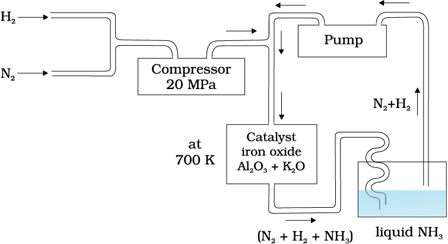
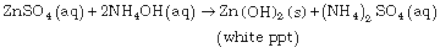
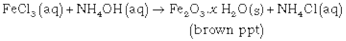
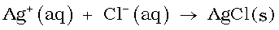
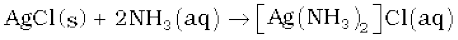

7.3 Ammonia
Preparation
Ammonia is present in small quantities in air and soil where it is formed by the decay of nitrogenous organic matter e.g., urea.
On a small scale ammonia is obtained from ammonium salts which decompose when treated with caustic soda or calcium hydroxide.
2NH4Cl + Ca(OH)2 → 2NH3 + 2H2O + CaCl2
(NH4)2 SO4 + 2NaOH → 2NH3 + 2H2O + Na2SO4
On a large scale, ammonia is manufactured by Haber’s process.
N2(g) + 3H2(g) 2NH3(g); ∆f H = – 46.1 kJ mol–1
In accordance with Le Chatelier’s principle, high pressure would favour the formation of ammonia. The optimum conditions for the production of ammonia are a pressure of 200 × 105 Pa (about 200 atm), a temperature of ~ 700 K and the use of a catalyst such as iron oxide with small amounts of K2O and Al2O3 to increase the rate of attainment of equilibrium. The flow chart for the production of ammonia is shown in Fig. 7.1. Earlier, iron was used as a catalyst with molybdenum as a promoter.

Fig. 7.1 Flow chart for the manufacture of ammonia
Properties
Ammonia is a colourless gas with a pungent odour. Its freezing and boiling points are 198.4 and 239.7 K respectively. In the solid and liquid states, it is associated through hydrogen bonds as in the case of water and that accounts for its higher melting and boiling points than expected on the basis of its molecular mass. The ammonia molecule is trigonal pyramidal with the nitrogen atom at the apex. It has three bond pairs and one lone pair of electrons as shown in the structure.
Ammonia gas is highly soluble in water. Its aqueous solution is weakly basic due to the formation of OH– ions.
NH3(g) + H2O(l) NH4+ (aq) + OH– (aq)
It forms ammonium salts with acids, e.g., NH4Cl, (NH4)2 SO4, etc. As a weak base, it precipitates the hydroxides (hydrated oxides in case of some metals) of many metals from their salt solutions. For example,


The presence of a lone pair of electrons on the nitrogen atom of the ammonia molecule makes it a Lewis base. It donates the electron pair and forms linkage with metal ions and the formation of such complex compounds finds applications in detection of metal ions such as Cu2+, Ag+:
Cu2+ (aq) + 4 NH3(aq) [Cu(NH3)4]2+(aq)
(blue) (deep blue)

(colourless) (white ppt)

(white ppt) (colourless)
Uses: Ammonia is used to produce various nitrogenous fertilisers (ammonium nitrate, urea, ammonium phosphate and ammonium sulphate) and in the manufacture of some inorganic nitrogen compounds, the most important one being nitric acid. Liquid ammonia is also used as a refrigerant.
Example 7.4
Why does NH3 act as a Lewis base ?
Solution
Nitrogen atom in NH3 has one lone pair of electrons which is available for donation. Therefore, it acts as a Lewis base.